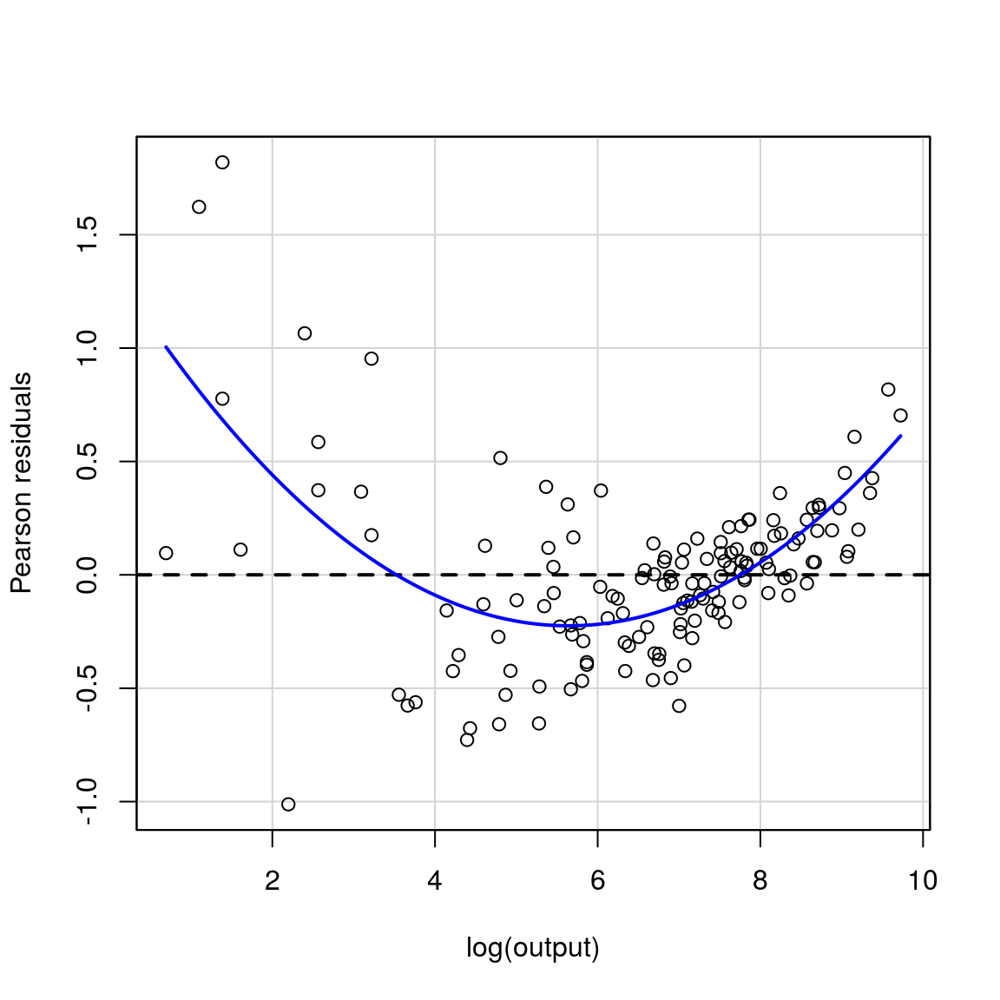

vignettes/chapter-01.Rmd
chapter-01.RmdLoad the hayashir package
library(hayashir)Let’s get a quick look at our data by looking at the first 10 rows:
knitr::kable(head(nerlove, 10))| total_cost | output | price_labor | price_fuel | price_capital |
|---|---|---|---|---|
| 0.082 | 2 | 2.09 | 17.9 | 183 |
| 0.661 | 3 | 2.05 | 35.1 | 174 |
| 0.990 | 4 | 2.05 | 35.1 | 171 |
| 0.315 | 4 | 1.83 | 32.2 | 166 |
| 0.197 | 5 | 2.12 | 28.6 | 233 |
| 0.098 | 9 | 2.12 | 28.6 | 195 |
| 0.949 | 11 | 1.98 | 35.5 | 206 |
| 0.675 | 13 | 2.05 | 35.1 | 150 |
| 0.525 | 13 | 2.19 | 29.1 | 155 |
| 0.501 | 22 | 1.72 | 15.0 | 188 |
Some information about the variables in the data can be found in the documentation:
And we can gain an understanding of the structure of our data by:
str(nerlove)
#> Classes 'tbl_df', 'tbl' and 'data.frame': 145 obs. of 5 variables:
#> $ total_cost : num 0.082 0.661 0.99 0.315 0.197 0.098 0.949 0.675 0.525 0.501 ...
#> $ output : num 2 3 4 4 5 9 11 13 13 22 ...
#> $ price_labor : num 2.09 2.05 2.05 1.83 2.12 2.12 1.98 2.05 2.19 1.72 ...
#> $ price_fuel : num 17.9 35.1 35.1 32.2 28.6 28.6 35.5 35.1 29.1 15 ...
#> $ price_capital: num 183 174 171 166 233 195 206 150 155 188 ...And by using the skim command from the skimr package we can look at summary statistics:
# install.packages("skimr")
library(skimr)
skim(nerlove)
#> Skim summary statistics
#> n obs: 145
#> n variables: 5
#>
#> Variable type: numeric
#> variable missing complete n mean sd p0 p25 p50
#> output 0 145 145 2133.08 2931.94 2 279 1109
#> price_capital 0 145 145 174.5 18.21 138 162 170
#> price_fuel 0 145 145 26.18 7.88 10.3 21.3 26.9
#> price_labor 0 145 145 1.97 0.24 1.45 1.76 2.04
#> total_cost 0 145 145 12.98 19.79 0.082 2.38 6.75
#> p75 p100 hist
#> 2507 16719 ▇▂▁▁▁▁▁▁
#> 183 233 ▁▆▇▆▃▂▁▁
#> 32.2 42.8 ▃▂▃▇▇▃▅▂
#> 2.19 2.32 ▂▁▇▃▃▇▇▆
#> 14.13 139.42 ▇▁▁▁▁▁▁▁unrestricted_ls <- log(total_cost ) ~ log(output ) + log(price_labor ) + log(price_capital ) + log(price_fuel)
model1 <- lm(unrestricted_ls, data = nerlove)
summary(model1)
#>
#> Call:
#> lm(formula = unrestricted_ls, data = nerlove)
#>
#> Residuals:
#> Min 1Q Median 3Q Max
#> -0.97784 -0.23817 -0.01372 0.16031 1.81751
#>
#> Coefficients:
#> Estimate Std. Error t value Pr(>|t|)
#> (Intercept) -3.52650 1.77437 -1.987 0.0488 *
#> log(output) 0.72039 0.01747 41.244 < 2e-16 ***
#> log(price_labor) 0.43634 0.29105 1.499 0.1361
#> log(price_capital) -0.21989 0.33943 -0.648 0.5182
#> log(price_fuel) 0.42652 0.10037 4.249 3.89e-05 ***
#> ---
#> Signif. codes: 0 '***' 0.001 '**' 0.01 '*' 0.05 '.' 0.1 ' ' 1
#>
#> Residual standard error: 0.3924 on 140 degrees of freedom
#> Multiple R-squared: 0.926, Adjusted R-squared: 0.9238
#> F-statistic: 437.7 on 4 and 140 DF, p-value: < 2.2e-16Scale Coefficient:
return_to_scale <- 1 / model1$coefficients[2]
print(return_to_scale)
#> log(output)
#> 1.388129t-stat:
library(car)
linearHypothesis(model1, c("log(price_capital) = 0" ))
#> Linear hypothesis test
#>
#> Hypothesis:
#> log(price_capital) = 0
#>
#> Model 1: restricted model
#> Model 2: log(total_cost) ~ log(output) + log(price_labor) + log(price_capital) +
#> log(price_fuel)
#>
#> Res.Df RSS Df Sum of Sq F Pr(>F)
#> 1 141 21.617
#> 2 140 21.552 1 0.064605 0.4197 0.5182
# relationship between t and F = F = t^2
test_results <- linearHypothesis(model1, c("log(price_capital) = 0" ))
# ie. same as above
t_stat <- sqrt(test_results$F)Following the book:
restricted_ls <- log(total_cost /price_fuel) ~ log(output) + log(price_labor / price_fuel) + log(price_capital / price_fuel)
model2 <- lm(restricted_ls, data = nerlove)
summary(model2)
#>
#> Call:
#> lm(formula = restricted_ls, data = nerlove)
#>
#> Residuals:
#> Min 1Q Median 3Q Max
#> -1.01200 -0.21759 -0.00752 0.16048 1.81922
#>
#> Coefficients:
#> Estimate Std. Error t value Pr(>|t|)
#> (Intercept) -4.690789 0.884871 -5.301 4.34e-07 ***
#> log(output) 0.720688 0.017436 41.334 < 2e-16 ***
#> log(price_labor/price_fuel) 0.592910 0.204572 2.898 0.00435 **
#> log(price_capital/price_fuel) -0.007381 0.190736 -0.039 0.96919
#> ---
#> Signif. codes: 0 '***' 0.001 '**' 0.01 '*' 0.05 '.' 0.1 ' ' 1
#>
#> Residual standard error: 0.3918 on 141 degrees of freedom
#> Multiple R-squared: 0.9316, Adjusted R-squared: 0.9301
#> F-statistic: 640 on 3 and 141 DF, p-value: < 2.2e-16We can find SSR from the anova function:
anova(model1)
#> Analysis of Variance Table
#>
#> Response: log(total_cost)
#> Df Sum Sq Mean Sq F value Pr(>F)
#> log(output) 1 264.995 264.995 1721.3849 < 2.2e-16 ***
#> log(price_labor) 1 1.735 1.735 11.2688 0.001015 **
#> log(price_capital) 1 0.005 0.005 0.0333 0.855374
#> log(price_fuel) 1 2.780 2.780 18.0581 3.889e-05 ***
#> Residuals 140 21.552 0.154
#> ---
#> Signif. codes: 0 '***' 0.001 '**' 0.01 '*' 0.05 '.' 0.1 ' ' 1We need to get SSR_u from model 1 and the denominator df:
anova_model1 <- anova(model1)
nrow(anova_model1)
#> [1] 5
SSR_u <- anova_model1$`Sum Sq`[nrow(anova_model1)]
df_resid_u <- anova_model1$Df[nrow(anova_model1)]and for the restricted model:
anova_model2 <- anova(model2)
nrow(anova_model2)
#> [1] 4
SSR_r <- anova_model2$`Sum Sq`[nrow(anova_model2)]
df_resid_r <- anova_model2$Df[nrow(anova_model2)]Then our F-stat is:
f_stat <- ( (SSR_r - SSR_u) / (df_resid_r - df_resid_u)) / (SSR_u / (df_resid_u))
print(paste("F stat is:", f_stat))
#> [1] "F stat is: 0.573660387505202"Which has a p-value of
pf(f_stat, df_resid_r - df_resid_u, df_resid_u, lower.tail = FALSE)
#> [1] 0.4500809Alternatively the critical value at 5% is
qf(0.05, df_resid_r - df_resid_u, df_resid_u, lower.tail = FALSE)
#> [1] 3.908741That was all kind of complicated … a simpler version would be using the linearHypothesis function from above by specifying the restriction we want to impose
linearHypothesis(model1, "log(price_labor) + log(price_capital) + log(price_fuel) = 1")
#> Linear hypothesis test
#>
#> Hypothesis:
#> log(price_labor) + log(price_capital) + log(price_fuel) = 1
#>
#> Model 1: restricted model
#> Model 2: log(total_cost) ~ log(output) + log(price_labor) + log(price_capital) +
#> log(price_fuel)
#>
#> Res.Df RSS Df Sum of Sq F Pr(>F)
#> 1 141 21.640
#> 2 140 21.552 1 0.088311 0.5737 0.4501scale_effect <- log(total_cost / output) ~ log(output ) + log(price_labor ) + log(price_capital ) + log(price_fuel)
model3 <- lm(scale_effect, data = nerlove)
summary(model3)
#>
#> Call:
#> lm(formula = scale_effect, data = nerlove)
#>
#> Residuals:
#> Min 1Q Median 3Q Max
#> -0.97784 -0.23817 -0.01372 0.16031 1.81751
#>
#> Coefficients:
#> Estimate Std. Error t value Pr(>|t|)
#> (Intercept) -3.52650 1.77437 -1.987 0.0488 *
#> log(output) -0.27961 0.01747 -16.008 < 2e-16 ***
#> log(price_labor) 0.43634 0.29105 1.499 0.1361
#> log(price_capital) -0.21989 0.33943 -0.648 0.5182
#> log(price_fuel) 0.42652 0.10037 4.249 3.89e-05 ***
#> ---
#> Signif. codes: 0 '***' 0.001 '**' 0.01 '*' 0.05 '.' 0.1 ' ' 1
#>
#> Residual standard error: 0.3924 on 140 degrees of freedom
#> Multiple R-squared: 0.6948, Adjusted R-squared: 0.6861
#> F-statistic: 79.69 on 4 and 140 DF, p-value: < 2.2e-16linearHypothesis(model2, "log(output) = 1")
#> Linear hypothesis test
#>
#> Hypothesis:
#> log(output) = 1
#>
#> Model 1: restricted model
#> Model 2: log(total_cost/price_fuel) ~ log(output) + log(price_labor/price_fuel) +
#> log(price_capital/price_fuel)
#>
#> Res.Df RSS Df Sum of Sq F Pr(>F)
#> 1 142 61.027
#> 2 141 21.640 1 39.386 256.63 < 2.2e-16 ***
#> ---
#> Signif. codes: 0 '***' 0.001 '**' 0.01 '*' 0.05 '.' 0.1 ' ' 1Which again returns an F-stat. We can map that into a t-stat as follows:
f_stat2 <- linearHypothesis(model2, "log(output) = 1")
t_stat2 <- sqrt(f_stat2$F[2])
print(paste("t stat is:", t_stat2))
#> [1] "t stat is: 16.0195576357841"# residual plot comes from car package
residualPlot(model2, variable = "log(output)")